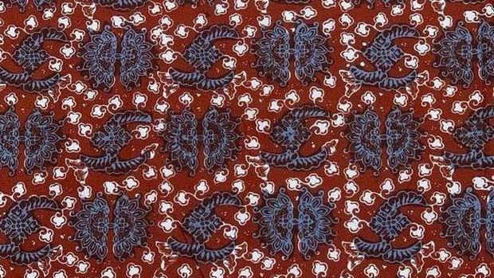
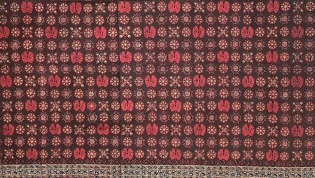
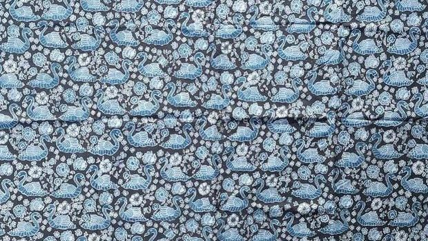
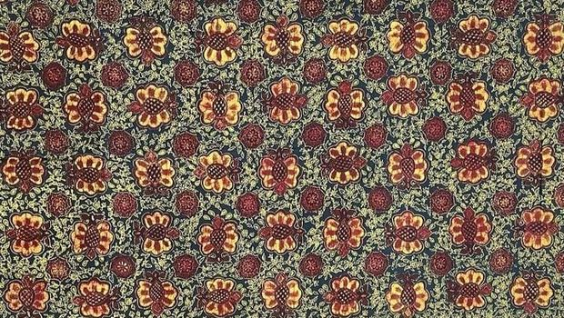
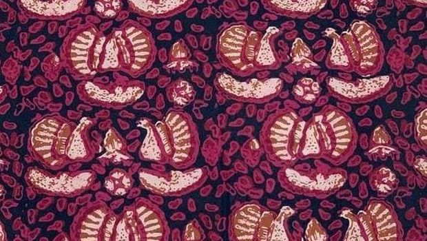

Teknik Batik Yang Gunakan
menggunakan teknik batik tulis untuk menciptakan motif yang detail dan presisi, mencerminkan karya pengrajinnya keahlian dan menjaga nilai-nilai budaya dan tradisional. Hasilnya lebih halus, tahan lama, dan memiliki keunikan tersendiri.

FAKTA
What is Batik?
Batik adalah seni melukis atau menulis di atas kain dengan menggunakan lilin panas dan pewarna. Proses pembuatan batik menghasilkan corak dan desain yang unik, mencerminkan budaya dan tradisi berbagai daerah.
Apakah batik yang dijual disini 100% buatan tangan?
Ya, kami menawarkan berbagai macam produk batik tulis yang dibuat dengan tangan oleh pengrajin batik berpengalaman. Beberapa koleksi juga tersedia dalam bentuk batik cap yang diproduksi dengan teknologi modern.
Bahan kain apa yang digunakan untuk produk batik?
Kami menggunakan berbagai bahan kain berkualitas seperti katun, sutra, dan rayon yang nyaman dipakai dan mudah perawatannya.
Flora Motif Collection
-

Durian Motif (Durian Pecah)
Rp 500.000 and up
Beli di WhatsApp -

Tanjung Flower Motif (Bungo Tanjung)
Rp 450.000 and up
Beli di WhatsApp -
 Taro Leaf Motif (Daun Keladi)
Taro Leaf Motif (Daun Keladi)
Rp 400.000 and up
Beli di WhatsApp
Flora Motif Collection
-

Durian Motif (Durian Pecah)
Rp 500.000 and up
Beli di WhatsApp -

Tanjung Flower Motif (Bungo Tanjung)
Rp 450.000 and up
Beli di WhatsApp -

Taro Leaf Motif (Daun Keladi)
Rp 400.000 and up
Beli di WhatsApp